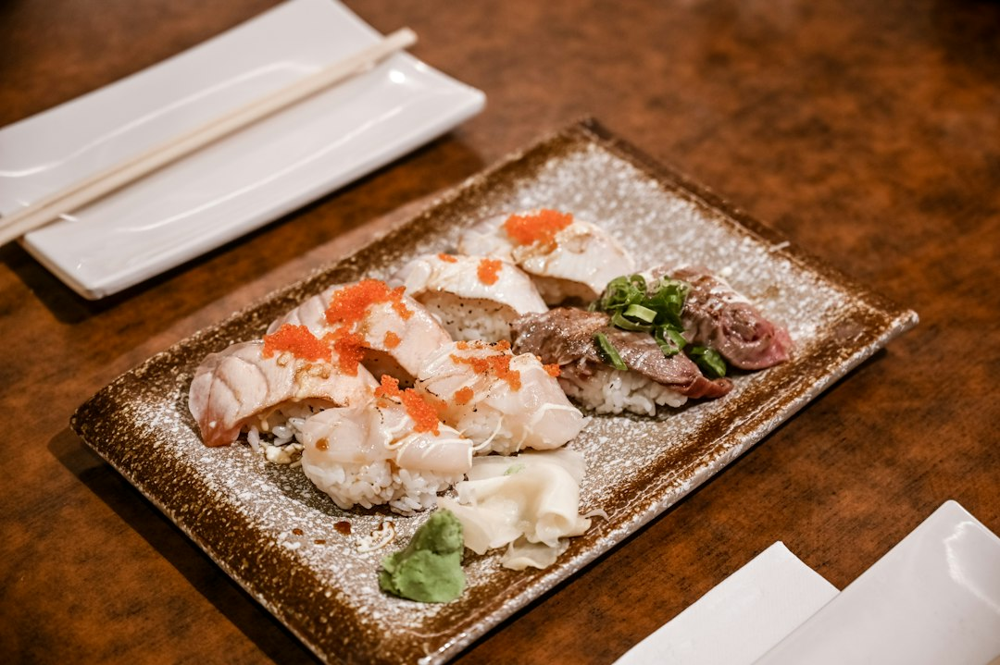

Use the directory as a shortlist tool, not the final booking source. It lists 9 provider types and shows featured examples in Spring Hill, Brisbane City, Sunnybank and South Brisbane. The practical process is to choose the occasion, compare the relevant dining category, read profile notes, then confirm current menus, trading details, group suitability and booking availability with the venue before relying on any listing.
For diners comparing brisbane restaurants, the useful work is narrowing cuisine, suburb, occasion and booking needs before moving from a profile listing to a venue conversation.
Brisbane Restaurants Explained
Best Brisbane Restaurants presents a dining directory for Brisbane, with category browsing, location browsing, reviews, photos, service comparisons and quote requests. Read each profile as a starting point. A listing can suggest whether a venue fits lunch, dinner, breakfast, private dining, functions or a cuisine type, but the venue should confirm current menus, trading details and booking availability.
A useful scan starts with the details that affect the booking. Note the suburb, broad category, profile notes and whether the entry is described as verified. Then ask whether the meal period, group size, dining style and dietary needs match what the venue currently offers.
- Quick meal: check location, meal period and the venue's current information.
- Special booking: compare fine dining, Modern Australian, seafood, steak or private dining signals, then confirm directly.
- Dietary choice: begin with Vegetarian and Vegan or Asian categories, then ask about the actual menu.
Choose by occasion before suburb
The directory sorts options into Asian, Casual and Family, Fine Dining, Italian, Modern Australian, Restaurants, Seafood, Steak and Grill, and Vegetarian and Vegan. That structure is useful because the occasion usually sets the shortlist before the map does. A relaxed family meal needs different evidence from a function enquiry or an Italian booking near Brisbane City.
Use suburb only when it solves a real constraint. Brisbane City appears with an Italian example, South Brisbane appears with Modern Australian and restaurant examples, Sunnybank appears as a listed restaurant location, and Spring Hill appears with a venue whose profile notes breakfast and dinner information. Those details frame the enquiry, but they do not replace the venue's current menu or booking response.
For a related comparison path, this guide to restaurants in Brisbane can sit beside the directory when checking how local dining pages organise categories and suburbs.
What the featured examples show
The featured examples give orientation without settling the choice. Frescos Restaurant is shown in Spring Hill, with notes that its own site provides breakfast and dinner information. Corbett and Claude is shown as an Italian restaurant in Brisbane City. Sunnybank Hotel is shown in Sunnybank, with dinner, lunch and menus referenced. Marlowe Restaurant is described in South Brisbane with Modern Australian cuisine and fine dining. Southside Restaurant is shown in South Brisbane with menus, private dining or functions and lunch mentioned.
Use those examples to see the kind of evidence a profile may contain: suburb, category, profile note and review context. Do not assume a listed menu item, function space or table size is available for your chosen date.
- Ask whether the online menu is current.
- Confirm lunch, dinner, breakfast or function availability.
- Check group size, seating preference and dietary handling.
- Use reviews as context, then base the booking on current venue information.
Who this applies to
This guide suits diners who want to compare Brisbane dining options before committing to a booking. It is relevant to people sorting by cuisine, visitors unfamiliar with local suburbs, groups comparing function or private dining possibilities, and residents who want to scan several venue types before choosing a shortlist.
It is less useful when the exact venue is already decided and only the latest availability matters. In that situation, a profile can still point to useful context, but the venue should answer questions about menus, trading details and booking conditions. Direct confirmation is also important when the meal depends on dietary needs, accessibility, a fixed event time or a large group.
Restaurant operators may use the same site differently. The page includes Add Your Business, Advertise, a free listing claim path and an upgrade option for priority placement, photos and lead tracking.
A compact booking checklist
Keep the shortlist small. Pick the occasion first, then the cuisine, then the location. After that, compare only the details that can change the booking outcome: meal period, current menu, photos, review context, service notes and whether the venue can be contacted directly.
The popular location prompts are useful when they match an actual plan: Casual and Family in Morningside or Teneriffe, Vegetarian and Vegan in Newstead or West End, Seafood in Teneriffe, Steakhouses in South Brisbane, Asian restaurants in Morningside, Woolloongabba or Fortitude Valley, Italian restaurants in Bulimba, West End or Brisbane City, Modern Australian in Fortitude Valley or Brisbane City, and general restaurant searches in Morningside, Bulimba, Newstead or Brisbane City.
- Choose the meal purpose, such as casual, family focused, fine dining, cuisine led or function related.
- Filter by the category that matches that purpose.
- Use the suburb filter after the dining style is clear.
- Read the profile for menu prompts, photos, reviews and contact options.
- Confirm availability and details with the venue.
- Start with occasion. Decide whether the meal is casual, family focused, fine dining, cuisine led or function related before comparing suburbs.
- Filter by category. Use the listed provider types to reduce the field to venues that match the dining style.
- Check profile evidence. Look for suburb, cuisine, photos, review context, menu prompts and whether the profile says the venue is verified.
- Confirm current details. Contact the venue to confirm menus, trading details and availability.
| Decision point | Use the listing for | Confirm directly with venue |
|---|---|---|
| Cuisine fit | Category labels such as Italian, Asian, Seafood or Vegetarian and Vegan | Current menu items and dietary handling |
| Occasion | Signals such as fine dining, casual, private dining or functions | Table size, seating, event suitability and availability |
| Location | Suburb and area shown on the profile | Travel time, parking or arrival arrangements |
| Review context | Published rating and review count on the source page | Whether recent service, menu or trading details still match your needs |
Common questions
How many dining types are listed? The page says readers can browse 9 provider types: Asian, Casual and Family, Fine Dining, Italian, Modern Australian, Restaurants, Seafood, Steak and Grill, and Vegetarian and Vegan.
Can I rely on a listing for current menus? Use it as a starting point. Several profile notes direct readers to check the venue's own information for current menus, trading details and booking availability.
Which suburbs appear in the featured examples? The featured examples in the supplied page include Spring Hill, Brisbane City, Sunnybank and South Brisbane.
Does the page include options for restaurant owners? Yes. It includes Add Your Business, Advertise, claim a free listing and upgrade options for priority placement, photos and lead tracking.
This guide covers how to compare local dining listings, categories, featured examples and booking checks before choosing a Brisbane venue.